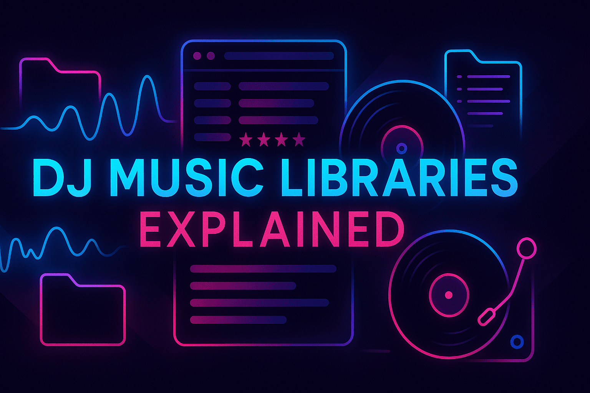
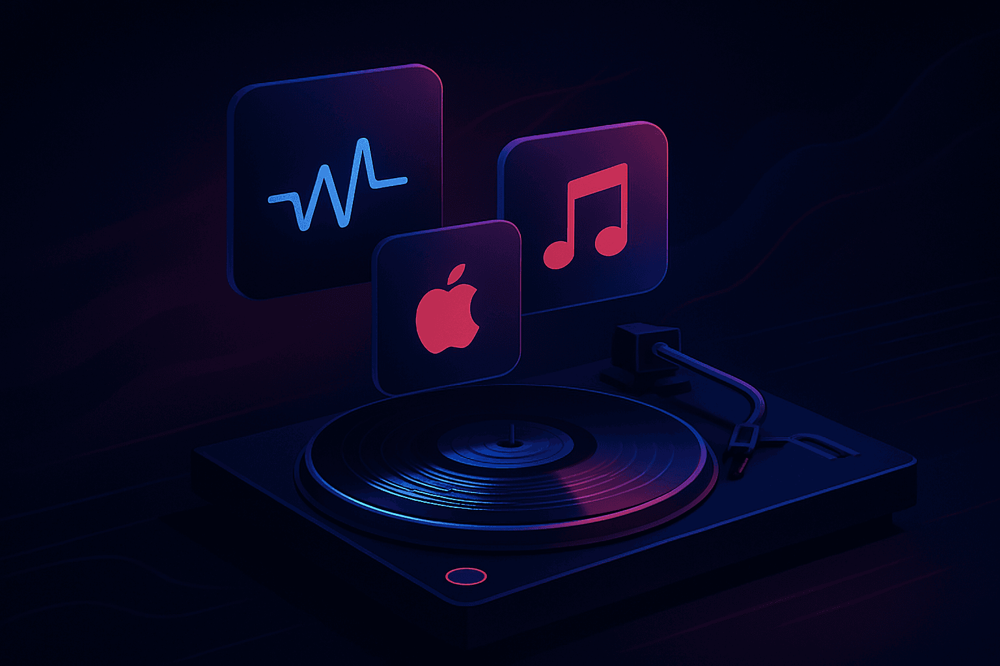
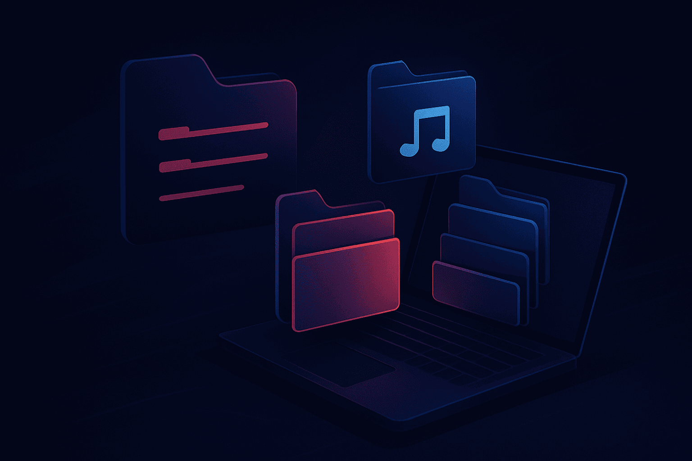
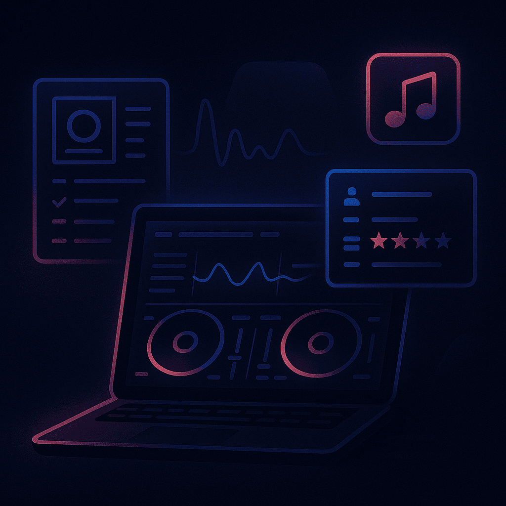
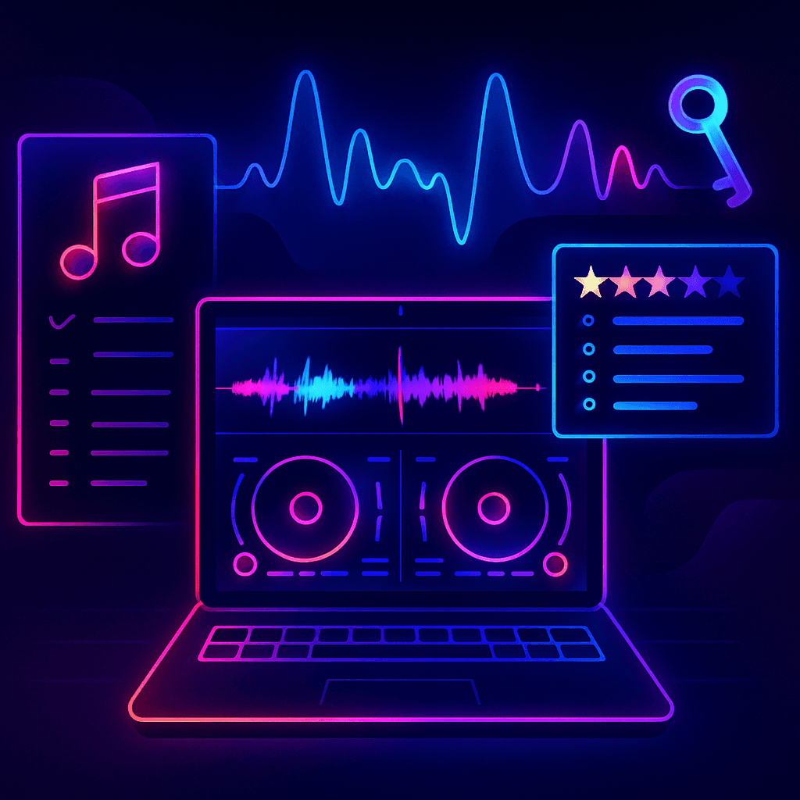
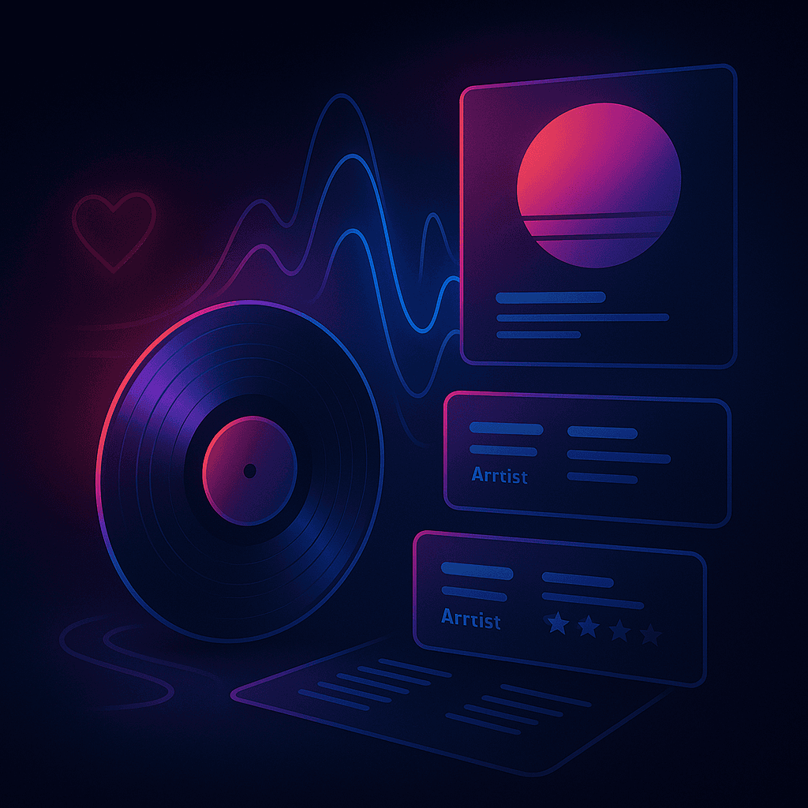

Pro Tips

As a DJ, your music is everything. Having a well-organized, accessible library can make or break your performance. I've been there before - scrambling through the endless folders of my DJ library.
In this piece, I'm going to share some techniques that massively improved my organization. I'll also share a couple of tools that can help you make the most of your collection.
What You’ll Learn About DJ Music Library Organization
- Proven strategies for organizing your music files to save time and stress.
- How to use DJ software features to supercharge your library management.
- How you can use PulseDJ to maximize the effectiveness of your library.
Where DJs Find Their Music

Before you can organize anything, you need to have the raw materials. Building your own library is an incredibly personal journey, but the source of your music files is non-negotiable. For professional DJs, quality and legality are paramount. Forget ripping low-quality audio from YouTube; it will sound terrible on a club system, and it's a legal minefield. Let's look at the best places to build a professional-grade collection.
Best Digital Music Stores for DJs
This is the most direct way to buy music for DJing. You pay per track or for full albums, and you get a high-quality file to keep forever.
- Beatport : This is the undisputed king for electronic music DJs. It's my go-to for everything from deep progressive house to pounding techno. You can find new releases, browse curated charts, and download music in lossless formats like WAV or AIFF, which is essential for maximum audio quality.
- Bandcamp : An amazing platform for discovering independent artists and labels. What I love about Bandcamp is that a higher percentage of the money goes directly to the musicians. You can often find hidden gems here that other DJs will miss, giving your sets a unique edge - from jazz to hard trance.
- iTunes Store / Apple Music: While many see it as a consumer platform, the iTunes Store is still a valid place to purchase tracks, especially for commercial genres like pop, rock, and hip hop. It's particularly useful for open format DJs who need a broad range of music.
Best Record Pools for DJs
A record pool is a subscription service that gives DJs access to a vast library of promotional music for a monthly fee. This is often the most cost-effective way to get new music, especially if you play a lot of commercial genres.
- BPM Supreme : A fantastic all-rounder, great for open-format, hip-hop, and electronic music. They provide tons of exclusive DJ edits, intros, and remixes that are designed for mixing.
- DJCity : Another giant in the record pool world, known for being on the pulse of what's current. They offer a great selection of tracks and have a strong focus on club and radio hits.
- LiveDJService : A great source for commercial dance and pop music, often providing clean edits and various remix versions.
For me, using a combination of Beatport for specific electronic tracks I want to support and a record pool for the bulk of my commercial and DJ-friendly edits has been a game-changer. It gives me both the unique tracks I love and the crowd-pleasers I need.
How To Organize A DJ Music Library

Okay, you've started to download tracks. Now, how do you prevent the digital chaos I described earlier? You need a system. A logical folder structure on your hard drive is the bedrock of good library management. It makes it easier to find songs, back up your collection, and migrate to new DJ software if you ever need to.
The Folder Structure Philosophy - For Organizing a DJ Library
There is no single "correct" way to do this, but the key is consistency. Choose a system and stick to it. Here are a few popular methods:
- By Genre: This is the most common method. You create a main folder for each genre (e.g., 'House', 'Techno', 'Hip Hop'). Inside those, you might have sub-folders for sub-genres or artists.
- By Date Acquired: Some DJs, particularly those who play a lot of new music, organize by the date they downloaded the tracks. For example, a folder for '2025-09', then a new folder for '2025-10'. This keeps all your new releases in one place, ready for your next gig.
- By Energy/Vibe: This is a more advanced technique. You might have folders like 'Warm-Up', 'Peak Time', 'After Hours'. This requires you to listen to and categorize each track as you download it, but it can make building a DJ set incredibly fast.
I personally use a hybrid approach. My top-level folders are genres. Within each genre, I have a folder called INBOX where all new tracks go. After I listen, add cue points, and properly tag a track, I move it into a sub-folder, usually organized by Artist or Label. That INBOX folder ensures no new music gets lost in the shuffle.
File Naming is Crucial for DJ Libraries
Before you even import a track into your DJ software, get the file name right. A file named track01.mp3 is useless. A good naming convention saves you headaches down the line. I recommend:
- Artist - Title (Remix).mp3
For example: Daft Punk - Around the World (Masters at Work Remix).wav
This simple habit makes your files searchable and identifiable outside of your DJ software.
DJ Library Organization Techniques Compared
Here’s a quick comparison of organizational styles:
Method
Best For
By Genre
Intuitive, easy to browse, works well with most DJ software.
Can become cluttered with many sub-genres.
Most DJs, from beginners to pros.
By Date
Excellent for finding new music quickly, keeps library fresh.
Hard to find older, specific tracks.
DJs who play current hits (radio, club).
By Energy
Speeds up in-set programming, focuses on the mix's flow.
Subjective, requires a lot of upfront work.
Experienced DJs with a defined style.
Hybrid
Highly customizable, offers the best of multiple systems.
Requires strict discipline to maintain.
Meticulous DJs looking for ultimate control.
Introducing PulseDJ - An AI Copilot For Navigating Your Library

While having a huge library has its benefits, it can also be a pain. Decision paralysis can completely derail a mixing session, causing you to panic and choose a subpar track. I believe one of the most effective digital DJ tips is to utilize powerful track suggestion software.
This is where an AI copilot tool like PulseDJ can be a lifesaver.
Imagine this:
You're playing a tune, and aren't sure what to play next. Your DJ co-pilot, with the knowledge of millions of parties and playlists, scans your library and suggests a range of perfect tracks to mix in with.
This is the reality of PulseDJ.
Unlike BPM & Key-based track suggestion tools built into software like rekordbox, Traktor, and VirtualDJ, PulseDJ uses a huge dataset and powerful AI model to suggest tracks based on the analysis of over 1.8 million parties and playlists.
This means that rather than just getting a suggestion based on BPM, it shows you tracks that have been proven to work in other parties. It's like having an impossibly experienced DJ standing next to you, pointing out some good tracks to pick.
And the best part? It's completely free!
Watch the video above, or even better, download PulseDJ yourself and get stuck in!
The Tools of the Trade: DJ Software & Library Management

Your DJ software is your command center. In recent years, programs like Serato, Rekordbox, Traktor, and Virtual DJ have evolved into powerful library management tools. They don't just play music; they help you organize it in ways that go far beyond simple folders.
The Power of Metadata for DJ Libraries
Every audio file contains hidden information called metadata or ID3 tags. This includes the Artist, Title, Album, Genre, Year, and even Album Art. Taking the time to ensure this information is correct is vital for a well-organized music collection.
DJ Smart Playlists: Your Secret Weapon
This is where the real magic happens. Smart playlists (or 'Intelligent Playlists' in iTunes) are playlists that automatically populate based on rules you set. This is one of those key features for any music collector.
Here are a few ideas for smart playlists that have transformed my workflow:
- New Additions: A playlist of all songs added in the last 14 days. This is my go-to for practicing with new tracks.
- Set Starters: A playlist of tracks with a BPM between 120-123 and a 4 or 5-star rating. Perfect for finding an opening track.
- Never Played: Create a playlist of all songs with a 'Play Count' of 0. This encourages you to dig through your collection and rediscover hidden gems you forgot you had.
- Genre & Key: A playlist for 'Progressive House' tracks that are in the key of 'Am'. This is incredibly useful for harmonic mixing.
Setting up smart playlists takes a little time initially, but they automate the discovery process within your own library, helping you unlock its full potential.
Cue Points and Loops for Organizing DJ Libraries

Modern DJ software lets you set markers within a track called cue points. These can mark the first beat, a vocal drop, or a great outro loop. Prepping your tracks by setting cue points is part of library management. It's an investment of time that pays off massively during a live performance. When I'm in the mix, having my key mix-in and mix-out points already marked allows me to be more creative and less stressed.
Some DJ apps and software, like Engine DJ, have advanced features for on-the-fly track analysis and management, but the principles of good organization remain the same regardless of the platform.
The Art of Curation for DJs: Beyond Just Collecting

Having all the music in the world is useless if it isn't the right music for you. A great DJ music library is a reflection of your personal taste and style. It's not just about hoarding tracks; it's about curation.
This means actively engaging in music discovery. Listen to full albums, not just the big singles. Follow artists and labels you love. Use streaming service platforms like Spotify or Apple Music for discovery – their algorithms can introduce you to amazing new musicians. Create Spotify playlists of potential tracks, but remember, for a professional DJ set, you must buy music legally. Streaming tracks directly into your DJ software is possible now, but a local library of high-quality audio files is more reliable and professional.
Don't be afraid to be selective. If you listen to a track and know you'll never play it, delete it. A smaller library of amazing songs you know inside and out is far more powerful than a massive, bloated collection of music you don't connect with. Your goal is to build a collection where every single track is one you'd be excited to play. Share your finds with like-minded people and other DJs; building a community around music discovery is one of the best parts of being a DJ.
Maximise Your DJ Library With PulseDJ

Building and organizing a great music library can take a while - but once you have it, your DJing is going to become much more fluid.
One of my favorite tools for navigating my huge music library is PulseDJ. As I explained above, it gives much better track recommendations than standard DJ software.
It helps to make the most of your library, pulling out the hidden gems that you might have forgotten about, to create a perfectly flowing mix that hits with your audience.
It's also completely free! Download PulseDJ now !
‹ The Best Beginner DJ Software in 2025 - Ranked and Reviewed